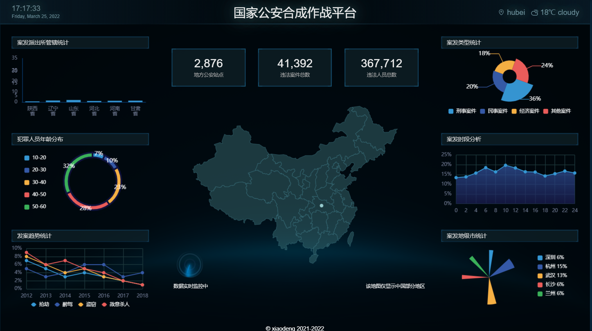

邓郭龙
男 | 21岁 | 前端开发工程师
手机：17607216953 | 微信：Lgd_allen | 邮箱：guolong613@gmail.com
教育经历
~ 武汉华夏理工学院 信息工程学院 本科
项目经历
-
咕噜咕噜 UI
 源码链接
项目预览
源码链接
项目预览
技术栈： Vue3 / TypeScript / Webpack
这是我在学习Vue3时制作的一个UI库，涵盖了Button，Switch...常见UI组件，在制作过程中，我对 Vue3 有了新的认识,并且深入理解了 setup, onMounted, watchEffect, ref, computed等 Composition API。全程亲手编写，尽量不采用第三方库，模块化的源代码简洁明了，易于阅读。
-
大屏可视化
 源码链接 项目预览技术栈： React / ReactRouter / Echarts
这个项目是我在学习前端可视化与echarts时，仿照网上的开源项目制作而成的。页面布局使用了Grid 和 Flex布局，为了适应所有屏幕，我们使用了动态rem方案。项目中包含的图例有柱形图，折线图，饼图， 地图等，并且所有图例都可以实时更新数据并辅以动画交互。通过这个项目，我掌握了大屏可视化项目的制作技巧。
-
旺财记账
源码链接 项目预览技术栈：React / Hooks / Node.js / Vite
这是我从自己的需求出发，开发的一款记账应用，特点是随时随地快速记账，我每天都用它来记账。该项目是基于前端框架 React 实现,使用 React-hooks API 来编写, 使用 React-Router来实现路由切换, 使用 自定义Hooks来实现全局状态管理, 使用 localStorage来进行本地数据存储,服务端采用Node后端框架 eggjs来搭建,使用Mysql数据库来存储用户信息。
技能
- 熟悉页面制作技巧并完成移动端适配，能将设计稿完美还原
- 熟悉前后端分离技术，包括 AJAX、跨域、前端路由等
- 熟练掌握 React全家桶的使用，包括 create-react-app、ReactRouter、Redux 等
- 熟练掌握 Vue全家桶的使用，包括 VueCli、VueRouter、Vuex 等
- 熟悉 ES6，包括 let / Promise / 析构赋值
- 熟悉 Linux操作系统命令行的基本操作
- 了解Mysql数据库的基本操作 , Webpack 的配置和优化
- 了解Node.jsWeb应用开发 , TypeScript 的使用，我的项目就是 TS 实现的
- 对docker容器的概念有一定的了解